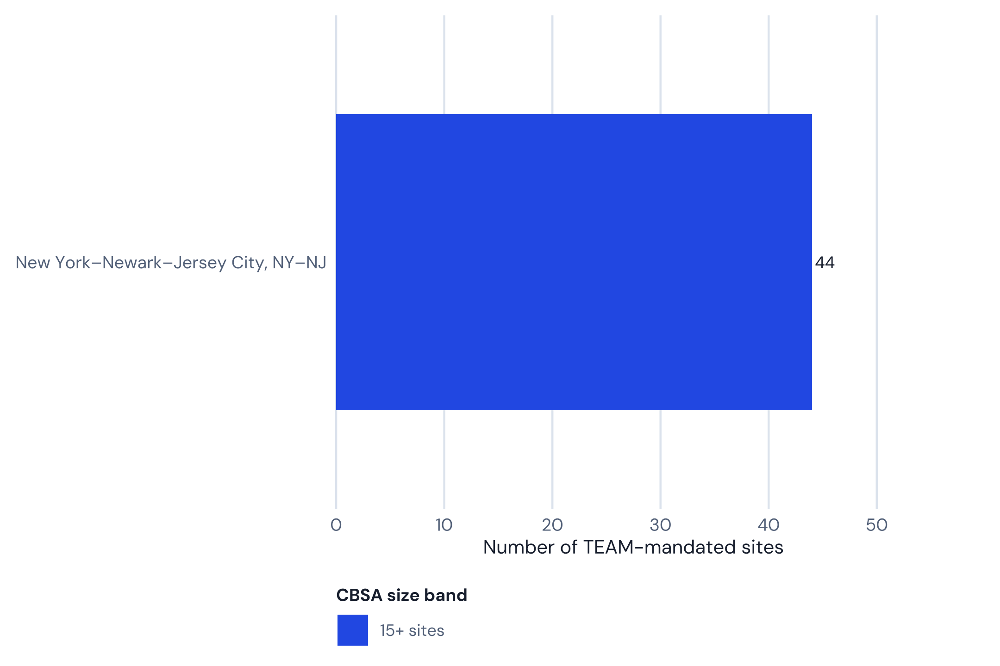
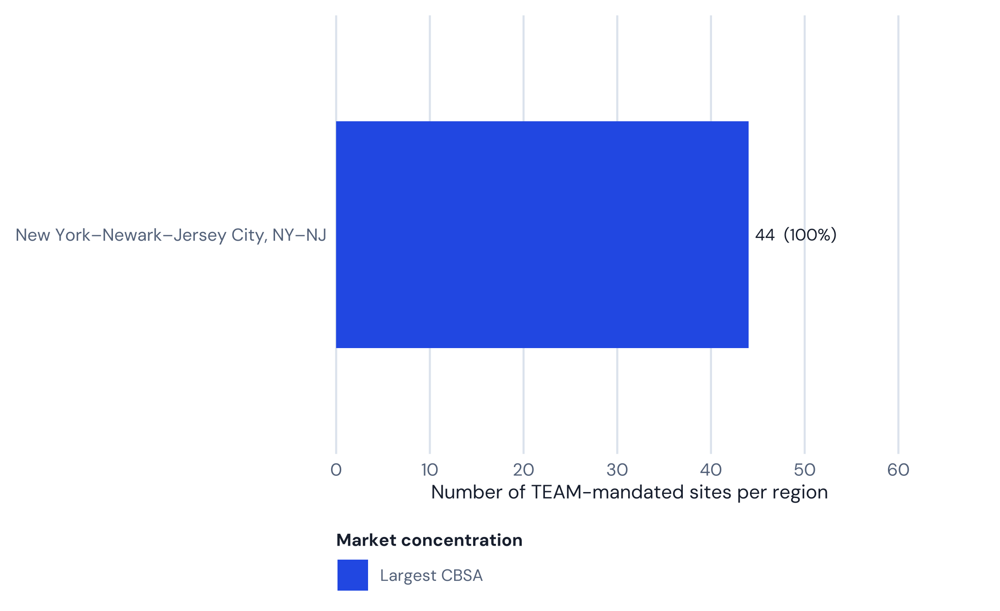

| Signal | Value | Why it matters |
|---|---|---|
| Mandated hospitals | 44 | NY–NJ metro overlap |
| CBSAs | 1 | Largest CBSA: New York–Newark–Jersey City, NY–NJ ( 44 hospitals) |
| Medicare beneficiaries | Not computed in this pipeline | Covered-lives scale |
| HRRP (all conditions) | 61.9% vs 48.1% national | Readmission pressure under episode accountability |
| Est. annual LEJR | Not published at hospital level | Volume concentration |
CMS TEAM in New Jersey: 44 Hospitals and the Nation’s Worst Readmissions Profile Among Large TEAM States
New Jersey’s 44 TEAM-mandated hospitals post the worst readmissions profile of any large state roster in CMS’s Transforming Episode Accountability Model — verified against live CMS data, not the ‘nation’s highest’ headline number that circulates.

White paper
CMS TEAM in New Jersey: 44 Hospitals and the Nation’s Worst Readmissions Profile Among Large TEAM States
44 mandated hospitals · 1 CBSA · before PY2 (2027)
Rainfall white paper · Narration
Listen while you read
Methodology. Hospital counts, CBSA breakdowns, figures 1–2, and the readmissions comparison recompute on render from vendored CMS data (the TEAM participant list and HRRP dataset 9n3s-kdb3, joined by CCN). Episode-dollar and Medicare-population figures are not invented here; where this repo has no verified source, the report says so rather than repeating an unsourced estimate.
01 · At a glance
Live hospital counts come from the vendored CMS TEAM participant list. The HRRP row below is computed at render time from the CMS HRRP dataset (9n3s-kdb3) joined to this scope’s roster by CCN; Medicare-population and per-episode LEJR figures are not published at hospital level, so this report states that rather than estimating them.
02 · Where the mandate sits
Largest market in this scope: New York–Newark–Jersey City, NY–NJ (44 hospitals).

| CBSA | Hospitals | Share (%) |
|---|---|---|
| New York–Newark–Jersey City, NY–NJ | 44 | 100 |

03 · Guide narrative (from the website TEAM report)
Takeaways
- 44 hospitals — all in the NY–NJ metro CBSA
- New Jersey’s HRRP excess-readmission rate is 61.9% vs 48.1% nationally — the worst of any large-roster TEAM state, though not literally the single highest nationally once every TEAM state is checked
- Unlike New York, New Jersey runs above the national rate on hip/knee replacement, TEAM’s core procedure category — the one condition where a favorable split would matter most, and New Jersey doesn’t have it
- Hackensack Meridian Health and RWJBarnabas Health are the two largest systems in scope
- Shared CBSA with 65 New York hospitals, all competing for the same post-acute capacity
New Jersey’s TEAM mandate: one CBSA, all 44 hospitals
All 44 CMS TEAM-mandated hospitals in New Jersey fall within a single Core-Based Statistical Area: the New York–Newark–Jersey City, NY–NJ metropolitan CBSA. This is not a planning anomaly but a reflection of economic geography: northern and central New Jersey form a single integrated labor market, commuter economy, and care delivery system with New York City. Patients from Bergen County may receive surgical care at Hackensack University Medical Center, recover at a New Jersey SNF, and receive outpatient follow-up from a Manhattan specialist — all within one TEAM episode window.
The implications for TEAM management are significant. New Jersey hospitals compete for post-acute placements — skilled nursing facilities, inpatient rehabilitation facilities, home health agencies — with 65 simultaneously mandated New York hospitals in the same metro area. The shared CBSA does not mean shared target prices: CMS sets hospital-specific targets based on each institution’s own historical spending blend with regional benchmarks. But it does mean that the post-acute market these hospitals depend on is simultaneously under pressure from 109 hospitals all trying to reduce episode costs at once.
CMS does not publish hospital-level TEAM episode volumes, so this report does not model a New Jersey-specific episode count the way an earlier version of this briefing did — doing so would mean presenting an invented number as New Jersey data.
Fast facts
- 44 hospitals mandated — all in the New York–Newark–Jersey City, NY–NJ CBSA
- 61.9% of NJ hospital-condition pairs exceed HRRP ERR 1.0, vs 48.1% nationally — worst among large-roster TEAM states
- CMS does not publish hospital-level LEJR episode volumes; this report does not estimate one for New Jersey
- Major systems in scope: Hackensack Meridian Health, RWJBarnabas Health, Atlantic Health System
The NJ paradox: high resources, high penalties
Joining New Jersey’s live TEAM roster to the CMS HRRP dataset (9n3s-kdb3, performance period 07/01/2021–06/30/2024) by CCN, all 44 of New Jersey’s 44 mandated hospitals appear in the HRRP file. Across those hospitals’ condition pairs, 61.9% exceed the excess readmission ratio (ERR) threshold of 1.0, against 48.1% nationally. That gap is real — this is the worst readmissions profile of any state with a large TEAM roster (20-plus mandated hospitals) that this repo has checked.
It is worth being precise about the “nation’s highest” framing that circulates for New Jersey, because checking it against every TEAM-participating state changes the story slightly. A handful of states with very small TEAM rosters — Indiana (6 hospitals), Georgia (13), Missouri (6) — post higher pooled rates than New Jersey, but a rate computed from a handful of hospitals is far noisier than one computed from 44. Among states with a roster large enough for the number to mean something, New Jersey’s 61.9% is the worst this analysis found.
Unlike New York, whose readmissions story splits favorably on hip and knee replacement specifically, New Jersey’s version of that split runs the other way. New Jersey’s hip and knee replacement ERR runs above the national rate: 56% of NJ hip and knee pairs exceed the threshold, against 47.9% nationally — the opposite of what New York shows. Pneumonia is the widest gap of all, at 75% against 46.8% nationally. The one exception is CABG, where New Jersey actually runs below the national rate (40% vs 49.9%) — but CABG is a small slice of New Jersey’s TEAM volume, and it doesn’t offset the pattern on hip and knee, the procedure category TEAM weights most heavily.
New Jersey is not under-resourced. Hackensack Meridian Health and RWJBarnabas Health are both large integrated systems with extensive post-acute partnerships, not under-staffed community hospitals with no quality infrastructure. Several hypotheses could explain the gap despite that scale. First, density creates competition for post-acute placements: in a market with 109 TEAM-mandated hospitals (44 in New Jersey, 65 in New York) all trying to place patients in lower-cost post-acute settings at once, skilled nursing and home health capacity constraints can push marginal placements toward higher-cost options or premature discharge home. Second, patient complexity in urban NJ markets is high, though HRRP’s risk adjustment is designed to account for this. Neither hypothesis is verified against hospital-level data in this report; they are offered as plausible explanations, not findings.
For TEAM purposes, the practical risk is straightforward: a hospital that already runs hot on HRRP readmissions across every tracked condition, including the ones TEAM prices directly, is structurally exposed to the same clinical failure pattern showing up as above-target episode costs once two-sided risk begins.
(Source: Centers for Medicare & Medicaid Services. HRRP supplemental data, Dataset 9n3s-kdb3. — vendored copy joined to the CMS TEAM participant list by CCN for this report.)
Complete hospital directory
All 44 New Jersey hospitals mandated for CMS TEAM are listed below, generated at render time from the same live roster used for the counts above.
| Hospital | CCN |
|---|---|
| Bayonne University Hospital | 310025 |
| Bayshore Medical Center | 310112 |
| Bergen New Bridge Medical Center | 310058 |
| Carewell Health Medical Center | 310083 |
| Centrastate Medical Center | 310111 |
| Chilton Medical Center | 310017 |
| Clara Maass Medical Center | 310009 |
| Community Medical Center | 310041 |
| Cooperman Barnabas Medical Center | 310076 |
| Englewood Hospital | 310045 |
| Hackensack Meridian Health Pascack Valley Medical | 310130 |
| Hackensack Meridian Mountainside Medical | 310054 |
| Hackensack University Medical Center | 310001 |
| Heights University Hospital | 310016 |
| Hoboken University Hospital | 310040 |
| Holy Name Medical Center | 310008 |
| Hunterdon Medical Center | 310005 |
| Jersey City Medical Center | 310074 |
| Jersey Shore University Medical Center | 310073 |
| Jfk University Medical Center | 310108 |
| Monmouth Medical Center | 310075 |
| Monmouth Medical Center-Southern Campus | 310084 |
| Morristown Medical Center | 310015 |
| Newark Beth Israel Medical Center | 310002 |
| Newton Medical Center | 310028 |
| Ocean University Medical Center | 310052 |
| Overlook Medical Center | 310051 |
| Palisades Medical Center | 310003 |
| Penn Medicine Princeton Medical Center | 310010 |
| Raritan Bay Medical Center | 310039 |
| Riverview Medical Center | 310034 |
| Robert Wood Johnson University Hospital | 310038 |
| Robert Wood Johnson University Hospital Somerset | 310048 |
| Robert Wood Johnson University Hospital at Rahway | 310024 |
| Saint Clare’s Hospital | 310050 |
| Saint Michael’s Medical Center | 310096 |
| Saint Peter’s University Hospital | 310070 |
| Secaucus University Hospital | 310118 |
| Southern Ocean Medical Center | 310113 |
| St Joseph’s University Medical Center Inc | 310019 |
| St Mary’s General Hospital | 310006 |
| Trinitas Regional Medical Center | 310027 |
| University Hospital | 310119 |
| Valley Hospital | 310012 |
(Source: Centers for Medicare & Medicaid Services (2026). TEAM participant list.)
Health system concentration and TEAM leverage
Hackensack Meridian Health and RWJBarnabas Health are the two largest systems represented on the New Jersey TEAM roster, each with roughly nine or more mandated facilities, including Hackensack Meridian’s flagship Hackensack University Medical Center and RWJBarnabas’s flagship Cooperman Barnabas Medical Center. This repo doesn’t carry a verified, CCN-level system-affiliation map for New Jersey the way California’s report does for its systems, so exact per-system counts here are approximate, not audited — a hospital’s own system membership should be confirmed directly rather than taken from this table. Directionally, that concentration still matters for TEAM management: vertically integrated post-acute networks and shared quality protocols can be deployed consistently across a large system’s episode volume in a way a standalone community hospital cannot match.
University Hospital, the only publicly-owned academic medical center in New Jersey (the clinical partner of Rutgers New Jersey Medical School), and Bergen New Bridge Medical Center (county-owned) are the safety-net facilities in the NJ TEAM cohort. Institutions like these typically serve a higher share of Medicaid and uninsured patients, which is worth flagging as a Track 2 eligibility question for those specific hospitals, though this report doesn’t have verified payer-mix data to confirm eligibility.
What this analysis does not estimate
CMS does not publish hospital-level TEAM episode volumes or target prices in a form this repo can join to the New Jersey roster, so this report does not model a New Jersey-specific episode count, target price, or gain/loss dollar figure. Optum Advisory (2025) projected that 56% of TEAM-mandated hospitals nationally will lose money once downside risk begins in Performance Year 2, averaging $1.2 million per facility — a national estimate, not a New Jersey-specific one, and its underlying methodology isn’t public. Given New Jersey’s readmissions profile, that national risk is plausibly more acute here than the average state, but this report does not attach a number to that intuition. A hospital that wants an actual dollar estimate needs its own CMS-issued target price file, obtained through the TEAM participant portal.
The most effective intervention, supported by both the Dummit et al. (2016) and Finkelstein et al. (2021) research bases, is reducing discharge to institutional post-acute care (IRFs and SNFs) in favor of home health for clinically appropriate patients. In New Jersey, where IRF and SNF placement rates have historically been high given proximity to facilities and physician incentive structures, this represents both the largest opportunity and the most organizationally challenging change.
(Source: Finkelstein et al. (2021), JAMA 325(18).)
Frequently asked questions
How many New Jersey hospitals are in CMS TEAM?
44 New Jersey hospitals are mandated to participate in CMS TEAM, all within the New York–Newark–Jersey City, NY–NJ CBSA, per the March 2026 CMS participant list.
Does New Jersey have the worst readmission performance under HRRP?
Among states with a large TEAM roster, yes. 61.9% of New Jersey’s hospital-condition pairs exceed the ERR 1.0 threshold in the CMS HRRP dataset, versus 48.1% nationally — the worst of any state with 20 or more TEAM-mandated hospitals that this analysis checked, ahead of Florida and Massachusetts. A few states with very small TEAM rosters (Indiana, Georgia, Missouri) post higher rates still, but those are computed from a handful of hospitals each, which is a much noisier number than New Jersey’s 44.
Are all New Jersey hospitals in the same CBSA?
Yes. All 44 NJ TEAM hospitals are in the New York–Newark–Jersey City, NY–NJ CBSA — a multi-state market shared with 65 New York hospitals.
Is Hackensack University Medical Center in CMS TEAM?
Yes. Hackensack University Medical Center is on the CMS TEAM participant list. Multiple other Hackensack Meridian Health facilities are also mandated.
When does NJ hospitals’ TEAM downside risk begin?
Performance Year 1 (2026) has no downside risk. Most NJ hospitals move to Track 3 (20%/20%) in PY2 (2027), though safety-net and county hospitals may qualify for Track 2.
Why does New Jersey have such a high readmission penalty rate if it has well-resourced systems?
Research suggests several factors: competitive post-acute markets where capacity constraints drive suboptimal placement; patient complexity in dense urban NJ counties; and historically high IRF/SNF utilization that has not been systematically reduced despite large system scale.
References
- Centers for Medicare & Medicaid Services. (2026). TEAM participant list (March 2026 update). CMMI. https://www.cms.gov/priorities/innovation/innovation-models/team-model
- Centers for Medicare & Medicaid Services. (2024, August). Transforming Episode Accountability Model: Final Rule. Federal Register, 89(166), 68986–69178. https://www.federalregister.gov/documents/2024/08/28/2024-17021/medicare-program-hospital-inpatient-prospective-payment-systems
- Centers for Medicare & Medicaid Services. (2024). Hospital Readmissions Reduction Program (HRRP) FY2025 supplemental data [Data set]. CMS Provider Data Catalog, Dataset 9n3s-kdb3. https://data.cms.gov/provider-data/dataset/9n3s-kdb3
- Dummit, L. A., Kahvecioglu, D., Marrufo, G., Rajkumar, R., Marshall, J., Tan, E., Le, S. T., Terebelo, S., Hearld, L., Xian, Y., Morishima, C., Pittman, P., Barzee, B., & Conway, P. H. (2016). Association between hospital participation in a Medicare bundled payment initiative and payments and quality outcomes for lower extremity joint replacement episodes. JAMA, 316(12), 1267–1278. https://doi.org/10.1001/jama.2016.12717
- Finkelstein, A., Ji, Y., Mahoney, N., & Skinner, J. (2021). Mandatory Medicare bundled payment program for lower extremity joint replacement and discharge to institutional postacute care. JAMA, 325(18), 1879–1890. https://doi.org/10.1001/jama.2021.5684
- Zuckerman, R. B., Sheingold, S. H., Orav, E. J., Ruhter, J., & Epstein, A. M. (2016). Readmissions, observation, and the Hospital Readmissions Reduction Program. New England Journal of Medicine, 374(16), 1543–1551. https://doi.org/10.1056/NEJMsa1513024
- Navathe, A. S., Liao, J. M., Emanuel, E. J., & Press, M. J. (2020). Opening a two-way street for bundled payments. JAMA, 323(2), 121–122. https://doi.org/10.1001/jama.2019.19040
- Optum Advisory. (2025, November). What hospitals need to know about TEAM for 2026. Advisory.com. https://www.advisory.com/topics/policy-and-payment/hospitals-need-to-know-team
Disclaimer. Rainfall Health is not a hospital, health system, or health care provider. This paper is prepared by health care industry professionals, not clinicians, and does not constitute clinical, legal, financial, or regulatory advice. Roster counts and readmission figures are computed from the CMS files cited above; this paper does not assess, rate, or make claims about the quality of care provided by any individual hospital or organization.